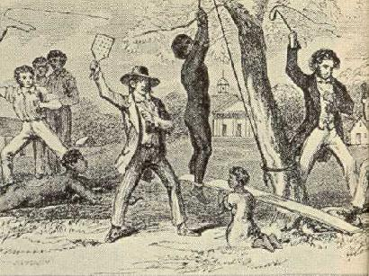

Significance of the Revolt
While Nat Turner's Revolt was not the largest slave revolt, it can be considered the most significant. His revolt caused much more government response than others at the time. Virginia government became more stringent about slavery laws after the 1831 insurrection. While this may make it seem that the revolt postponed liberation, it encouraged people to fight against slavery.
- Nat Turner was a martyr for rebels because although he was killed for his actions, he was the "alarm clock" that woke slaves up and helped them realize that they didn't have to accept slavery.
- Governments (mainly in Virginia) tightened laws on slavery after the revolt. Lawmakers thought that the insurrection was a result of free blacks inspiring slaves to fight against their masters. So, they passed laws that would prevent such an uprising from happening again. Many of these laws prevented blacks (both free and slave) from attending religious congregations, and from getting an education. Nat Turner was well educated and very religious, and they wanted to make sure there wouldn't be anymore slaves like him.
- Nat Turner's revolt caused great chaos throughout Virginia and the rest of the country. Slaves were beaten for being outside after dark. Some were "half hung", by the neck to prevent strangling, only to be pelted with rotten eggs. One slave recalled people being beaten "till the blood stood in puddles at their feet", due to (often false) suspicions of conspiracy. 
- Fearing more insurrections, whites raided colored people's homes, searching for signs of suspicious activity. Sometimes raiders would plant gunpowder in the houses as evidence to convict them of planning a revolt.
- In a town near Richmond, Virginia, slaves were no longer allowed to be seen together in groups of more than five, unless they were working.
- While there is little written about slaves' reactions to the Nat Turner's revolt, it has been found in at least one slave song:
A slave being beaten
You mought be rich as cream
And drive you coach and four-horse team,
But you can't keep de world from moverin' round
Nor keep Nat Turner from gainin' groundAnd your name it mought be Caesar sure
And got you cannon can shoot a mile or more,
But you can't keep de world from moverin' round
Nor keep Nat Turner from gainin' ground. (Foner 66)